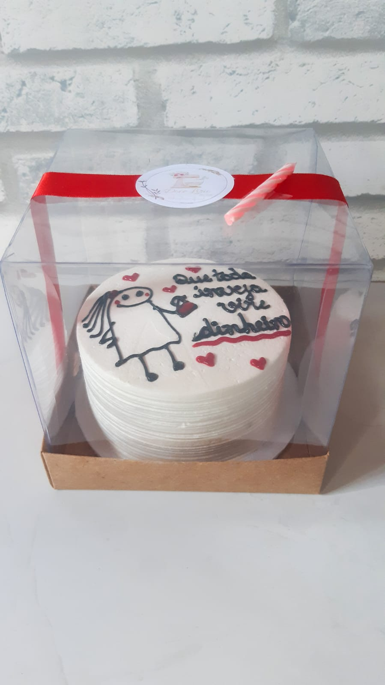

Biografia Doce Lírio|
O que é o bentô cake? Resultado de imagem para doce bentos Divertido, o bentô cake é bolinho feito com frases inusitadas para ocasiões especiais. Em uma marmita branca de isopor está um bolinho minúsculo, com apenas 10cm de diâmetro. Por cima da massa de chocolate, o creme branco de manteiga ilustra um boneco de traços finos e uma frase contendo: “3 anos ouvindo o seu ronco”

Instagram: @docelirio.oficial
Telefone: (85) 9.9869-7236
Telefone: (85) 9.9869-7236